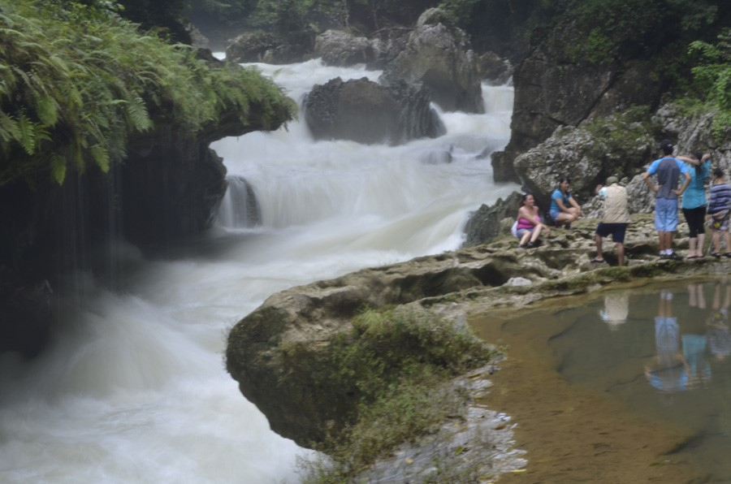

Semúc Champey es uno de los destinos más suspirados y soñados por las personas que visitan Guatemala, un lugar que muchos afirman ser el paraíso natural, rodeado del sonido de las chicharras durante la época de lluvia, aguas color turquesa, el sonido de los monos Saraguates que dan la bienvenida con su intimidante aullar, impresionantes paisajes y exuberante vegetación que anidan a muchas especies de aves, simplemente un tesoro escondido entre grandes montañas y protegido por el gran Rio Cahabón que te invita a quedarte y no querer regresar.
En el Departamento de Alta Verapaz, municipio San Agustín Lanquín encontrarás el Parque Natural Semuc Champey, nombre proveniente del idioma Maya Q’eqchi’ que significa “donde el rio se esconde”. El nombre cobra sentido al adentrarse en la selva tropical lluviosa y descubrir las maravillas del lugar.
Un manantial
Semúc Champey es un manantial que cae sobre el techo de una cueva que se ha formado durante el pasar de los años, muchas personas confunden el caudal del Rio Cahabón con el techo de la cueva.
El Sumidero
Les explicaré un poco como es esto: El Rio Cahabón es uno de los ríos más caudalosos de la zona de Alta Verapaz, al llegar a un lugar llamado “El Sumidero” el rio desaparece, este se sumerge bajo una cueva que tiene un largo aproximado de 300 metros, luego el río vuelve a aparecer en el otro extremo de la cueva.
Sobre esta cueva es donde se forman las pozas de Semúc Champey (este es el motivo del nombre), una belleza natural de cristalinas aguas y color turquesa, las cuales son alimentadas por manantiales que bajan de las montañas de casi 500 metros de altura.
Es de recalcar que el lugar llamado el Sumidero, es un lugar altamente peligroso, si caes al río, este te puede arrastrar. Para evitar accidentes, los administradores del parque tienen un cordón de precaución y un guarda recursos que no te permitirá acercarte, te invitamos a obedecer las reglas del parque que las encontrarás en tu boleto de ingreso.
